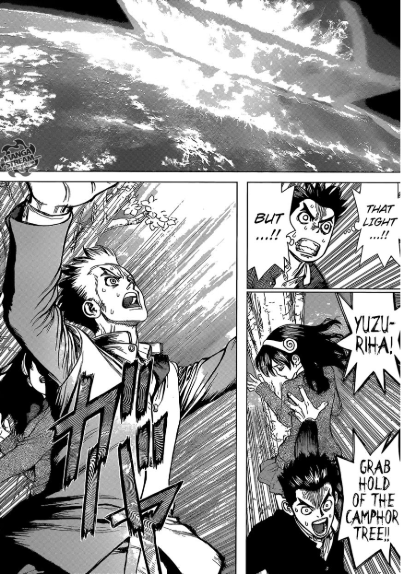

Right in the middle of exposition, there’s a sudden gleen flash that engulfs anyone and everyone on Earth. It’s throughout the story that the characters and readers figure out what really went down 3700 years ago. Now, while the story sticks as close to scientific reasoning as possible, the initial flash is something of fiction. But should we find us in this situation, what’s the best survival strategy? I went directly to the more “scientific” LLM, Gemini, to see what it thinks.
How to survive global petrification
While in the manga we are shown the safest position to hold, what should we know about it? Here was what Gemini had to say:
In the world of Dr. Stone, the “Petrification Beam” (the Medusa light) is the ultimate threat. If we have only a single second to react before the light hits us, our goal isn’t to avoid it—it’s impossible to outrun—but to maximize our chances of survival and eventual revival.
Here is the optimal strategy for positioning yourself:
1. The “Statue Safety” Pose
You need to ensure your stone body remains intact for centuries. If you break, you die (unless someone has top-tier “doctor” skills and some glue).
- The Pose: Curl into a fetal position on flat, stable ground.
- Why: Standing up is risky. Over thousands of years, wind, erosion, or earthquakes will likely topple a standing statue, causing limbs to snap off. Being low to the ground minimizes fall damage.
- Hands: Interlock your fingers behind your neck or cover your face. This protects your most vital “parts” from external weathering.
2. Location, Location, Location
Where you stand determines if you are ever found or if you erode away.
- Avoid: Trees (roots will break you), coastlines (erosion), and tall buildings (they will collapse).
- The Best Spot: A cave or a deeply sheltered interior room of a sturdy building. You want to stay dry and away from the elements to prevent “weathering” of your stone skin.
- Visibility: If possible, stay near something non-organic that might survive the test of time (like high-grade stainless steel or ceramics) to act as a marker for future rescuers.
3. The “Senku Method” (Mental Preparation)
This is the most grueling part. To ensure you wake up, you must maintain consciousness.
- The Task: Start a mental clock or a repetitive calculation immediately.
- The Science: As Senku discovered, thinking requires energy. If you keep your brain active, it slowly consumes the “petrification stone” as fuel. This is what allowed him (and Taiju) to break out naturally after 3,700 years.
- The Math: Count seconds. 1, 2, 3… If you stop thinking, you might fall into a “deep sleep” and never wake up, even if revival fluid is poured on you.
Probabilities
From Gemini, here’s their calculation and break down of my odds:
1. The Survival Phase (The Long Sleep)
This is the probability that your statue remains intact for 3,700+ years.
- Environmental Risk (40% Failure Rate): If you are outside, the odds are against you. Over millennia, most statues are destroyed by falling trees, flooding, or shifting soil.
- Structural Integrity (20% Failure Rate): If you are in a building, the building will eventually collapse. If you are on a high floor, your statue will likely shatter upon impact with the ground.
- Optimal Odds: If you are on the ground floor of a sturdy structure or in a dry cave, your survival probability for this phase is roughly 70–80%.

2. The Revival Phase (The Wake-Up Call)
This is the probability that you either break out yourself or someone finds you.
- Self-Revival (P_{self}): This is near zero unless you have the mental fortitude of Senku. You must maintain consciousness for 116,800,000,000 seconds (3,700 years). This requires a specific brain chemistry and a constant “thinking” state to wear down the stone.
- External Revival (P_{external}): This depends on your location.
- Near a Cave: If you are near a source of nitric acid (like a bat cave), your odds of being found by a “Kingdom of Science” scout are high.
- In a City: Cities become overgrown forests. It is very hard to find a specific statue under meters of sediment and roots.
Total Probability Estimate
Assuming you followed the positioning advice from our previous conversation, here is a rough “back-of-the-napkin” calculation of your odds:
| Scenario | Estimated Probability | Reasoning |
|---|---|---|
| The “Average” Person | ~5% | Most people will be standing, outside, or stop thinking immediately, leading to erosion or “brain death.” |
| The “Prepared” Fan | ~25% | You tucked into a fetal position in a safe spot, but you are still dependent on someone else finding you. |
| The “Senku” Tier | ~90% | You stayed conscious and positioned yourself near a nitric acid source or a landmark. |
Do I like those chances?
The odds aren’t looking that amazingly I will say. But then again, everything is truly up to chance because location matters, your reaction time, how you end up, where you end up, the weather, etc. And even if I do somehow break free through will, surviving on my own as someone spoiled by existing technology will be very hard. But if highschoolers can do it and be up to par with NASA scientists, then maybe I can too.